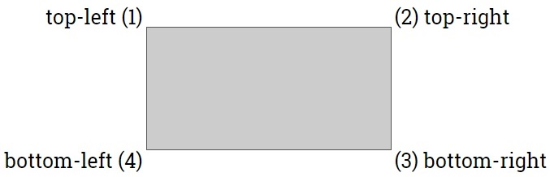

Cách chỉnh độ cong cho các góc của một phần tử
1) Tìm hiểu sơ lược về độ cong của một góc
- Thông thường thì "độ cong" của một góc được xác định dựa trên hai yếu tố: chiều rộng của góc & chiều cao của góc.
- Ví dụ: Tôi lấy góc "phía trên bên phải" của phần tử để làm minh họa.
|
|||||||||||||
2) Cách chỉnh độ cong cho các góc của một phần tử
- Để chỉnh "độ cong" cho các góc của một phần tử thì chúng ta sử dụng thuộc tính border-radius với cú pháp như sau:
- Trong đó, value có thể được xác định dựa theo một trong ba loại giá trị:
| width/height | - Độ cong của góc được xác định dựa theo cặp giá trị width/height. - Trong đó:
- Lưu ý: Nếu chúng ta chỉ xác định một giá trị thì giá trị đó sẽ đại diện cho cả width & height (Xem ví dụ) |
Xem ví dụ |
| initial |
- Sử dụng giá trị mặc định của nó (mặc định thì thuộc tính border-radius có giá trị là 0px) |
Xem ví dụ |
| inherit | - Kế thừa giá trị thuộc tính border-radius từ phần tử cha của nó. |
Xem ví dụ |
3) Cách thiết lập độ cong cho từng góc
 |
- Sau khi xem xong phần hướng dẫn phía trên thì chắc các bạn cũng đã thấy: "khi chúng ta thiết lập độ cong cho các góc của một phần tử HTML thì mặc định cả bốn góc của phần tử sẽ có chung một độ cong" Lập Trình Web - Tuy nhiên, không phải lúc nào người lập trình viên cũng muốn như thế, mà đôi khi họ muốn mỗi góc của phần tử sẽ có một "độ cong" khác nhau. Lập Trình Web - Để làm được điều đó thì chúng ta có hai cách cơ bản như sau:
- Tuy nhiên, trước khi đi vào tìm hiểu chi tiết hai cách trên thì các bạn cần phải nắm rõ tên của từng góc (bên dưới là ảnh minh họa vị trí từng góc và tên của chúng)  |
3.1) Thiết lập nhiều giá trị cho thuộc tính border-radius
- Để chỉnh "độ cong" cho riêng từng góc bằng cách thiết lập nhiều giá trị thì chúng ta sử dụng thuộc tính border-radius với cú pháp như sau:
- Trong đó:
- Bộ giá trị width dùng để xác định chiều rộng của từng góc.
- Bộ giá trị height dùng để xác định chiều cao của từng góc.
- Mỗi một bộ giá trị width (height) có thể được xác định dựa theo:
| Một tập hợp gồm bốn giá trị |
- Giá trị 1 sẽ là chiều rộng (chiều cao) của góc (1) - Giá trị 2 sẽ là chiều rộng (chiều cao) của góc (2) - Giá trị 3 sẽ là chiều rộng (chiều cao) của góc (3) - Giá trị 4 sẽ là chiều rộng (chiều cao) của góc (4) |
| Một tập hợp gồm ba giá trị |
- Giá trị 1 sẽ là chiều rộng (chiều cao) của góc (1) - Giá trị 2 sẽ là chiều rộng (chiều cao) của góc (2) & (4) - Giá trị 3 sẽ là chiều rộng (chiều cao) của góc (3) |
| Một tập hợp gồm hai giá trị |
- Giá trị 1 sẽ là chiều rộng (chiều cao) của góc (1) & (3) - Giá trị 2 sẽ là chiều rộng (chiều cao) của góc (2) & (4) |
div{
border:1px solid black;
background-color:violet;
width:400px;
height:200px;
border-radius:75px 100px 20px / 50px 10px;
}
- Lưu ý: Nếu chúng ta chỉ khai báo một bộ giá trị duy nhất thì bộ giá trị đó sẽ đại diện cho cả hai bộ giá trị là width & height.
div{
border:1px solid black;
background-color:violet;
width:400px;
height:200px;
border-radius:50px 100px 25px;
}
3.2) Thêm tên góc vào bên trong tên thuộc tính
- Để thiết lập "độ cong" cho riêng từng góc bằng cách thêm tên góc vào bên trong tên thuộc tính thì chúng ta sử dụng cú pháp như sau:
- Lưu ý: Đối với cú pháp loại này thì ở giữa giá trị width & height không được đặt dấu gạch chéo /
div{
border:1px solid black;
background-color:violet;
width:400px;
height:200px;
border-top-left-radius:75px 50px;
border-top-right-radius:100px 10px;
border-bottom-right-radius:25px 25px;
border-bottom-left-radius:40px 20px;
}
- Lưu ý: Nếu chúng ta chỉ khai báo một giá trị thì giá trị đó sẽ đại diện cho cả width & height.
div{
border:1px solid black;
background-color:violet;
width:400px;
height:200px;
border-top-left-radius:20px;
border-top-right-radius:40px;
border-bottom-right-radius:60px;
border-bottom-left-radius:80px;
}